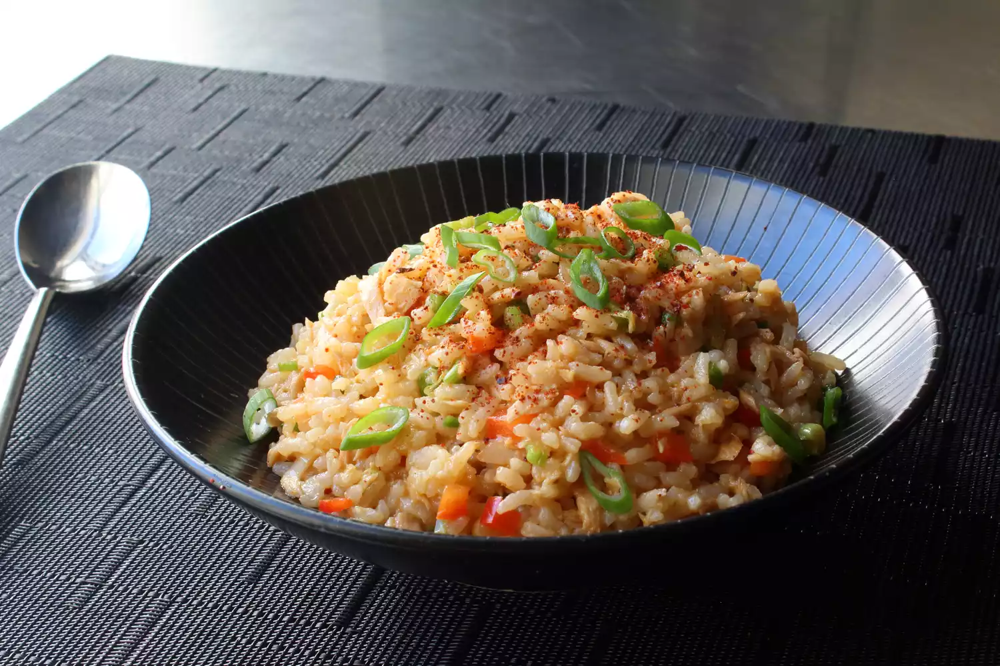

Home
Spicy Tuna Rice Bowl
What we have here is equal parts tuna and rice by weight, which for me, gives this the perfect balance between protein and starch. While this may remind some people of a fried rice dish, this is significantly lighter, and actually very low on fat content, but that doesn't mean it's not satisfying, and like most rice dishes, it's very comforting.
By John Mitzewich

Credit: allrecipes
Ingredients
- 1 cup uncooked long-grain rice
- 1 ½ cups water
- 1 (7 ounce) jar tuna packed in olive oil
- ½ cup finely diced red bell pepper
- ¼ cup finely diced jalapeno pepper
- ¼ cup finely sliced green onions
- ⅓ cup seasoned rice vinegar
- ½ lemon, juiced, or to taste
- 2 tablespoons soy sauce
- 2 teaspoons Sriracha hot sauce
- ½ teaspoon sesame oil
- 1 pinch Korean red pepper flakes (gochugaru), or to taste
- 1 teaspoon finely sliced green onion, or to taste
Directions
- Gather the ingredients.
- Pour rice into a heavy pot and add water; swirl to allow rice to settle. Bring to a simmer over medium-high heat; do not stir. Reduce heat to low, cover, and continue to simmer for 15 minutes.
- While rice is cooking, place tuna into a large mixing bowl and break up with your hands or a fork. Toss in red bell pepper, jalapeno, 1/4 cup green onions, rice vinegar, lemon juice, soy sauce, Sriracha, and sesame oil. Mix with a fork until thoroughly combined. Turn off heat and let rice sit, covered, for 10 minutes.
- Fluff rice with a fork to separate the grains and break up any large clumps; transfer into the mixing bowl. Mix thoroughly with a spoon until all the ingredients are evenly incorporated. Taste and adjust seasoning if needed. Serve warm, at room temperature, or cold like a rice salad, topped with red pepper flakes and 1 teaspoon green onion.
Home